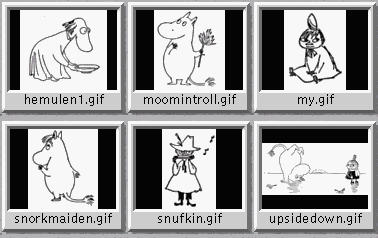
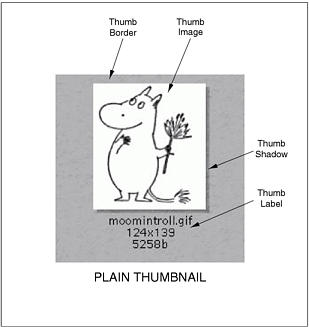
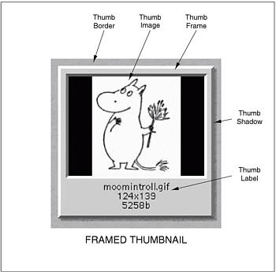

GraphicsMagick
GraphicsMagick
GraphicsMagick
GraphicsMagick
A montage is a single image which is composed of thumbnail images composed in a uniform grid. The size of the montage image is determined by the size of the individual thumbnails and the number of rows and columns in the grid.
The following illustration shows a montage consisting of three columns and two rows of thumbnails rendered on a gray background:
Montages may be either "plain" (undecorated thumbnails) or "framed" (decorated thumbnails). In order to more easily understand the options supplied to MontageImages(), montage options are supplied by two different classes: Magick::Montage and Magick::MontageFramed.
Magick::Montage is the base class to provide montage options and provides methods to set all options required to render simple (unframed) montages. See Magick::MontageFramedif you would like to create a framed montage.
Unframed thumbnails consist of four components: the thumbnail image, the thumbnail border, an optional thumbnail shadow, and an optional thumbnail label area.
The following is the definition of the Magick::Montage class:
class Montage
{
public:
Montage( void );
virtual ~Montage( void );
// Specifies the background color that thumbnails are imaged upon.
void backgroundColor ( const Color &backgroundColor_ );
Color backgroundColor ( void ) const;
// Specifies the image composition algorithm for thumbnails. This
// controls the algorithm by which the thumbnail image is placed
// on the background. Use of OverCompositeOp is recommended for
// use with images that have transparency. This option may have
// negative side-effects for images without transparency.
void compose ( CompositeOperator compose_ );
CompositeOperator compose ( void ) const;
// Specifies the image filename to be used for the generated
// montage images. To handle the case were multiple montage images
// are generated, a printf-style format may be embedded within the
// filename. For example, a filename specification of
// image%02d.miff names the montage images as image00.miff,
// image01.miff, etc.
void fileName( const std::string &fileName_ );
std::string fileName( void ) const;
// Specifies the fill color to use for the label text.
void fillColor ( const Color &fill_ );
Color fillColor ( void ) const;
// Specifies the thumbnail label font.
void font ( const std::string &font_ );
std::string font ( void ) const;
// Specifies the size of the generated thumbnail.
void geometry ( const Geometry &geometry_ );
Geometry geometry ( void ) const;
// Specifies the thumbnail positioning within the specified
// geometry area. If the thumbnail is smaller in any dimension
// than the geometry, then it is placed according to this
// specification
void gravity ( GravityType gravity_ );
GravityType gravity ( void ) const;
// Specifies the format used for the image label. Special format
// characters may be embedded in the format string to include
// information about the image.
void label( const std::string &label_ );
std::string label( void ) const;
// Specifies the pen color to use for the label text (same as fill).
void penColor ( const Color &pen_ );
Color penColor ( void ) const;
// Specifies the thumbnail label font size.
void pointSize ( unsigned int pointSize_ );
unsigned int pointSize ( void ) const;
// Enable/disable drop-shadow on thumbnails.
void shadow ( bool shadow_ );
bool shadow ( void ) const;
// Specifies the stroke color to use for the label text .
void strokeColor ( const Color &stroke_ );
Color strokeColor ( void ) const;
// Specifies a texture image to use as montage background. The
// built-in textures "granite:" and "plasma:" are available. A
// texture is the same as a background image.
void texture ( const std::string &texture_ );
std::string texture ( void ) const;
// Specifies the maximum number of montage columns and rows in the
// montage. The montage is built by filling out all cells in a row
// before advancing to the next row. Once the montage has reached
// the maximum number of columns and rows, a new montage image is
// started.
void tile ( const Geometry &tile_ );
Geometry tile ( void ) const;
// Specifies the montage title
void title ( const std::string &title_ );
std::string title ( void ) const;
// Specifies a montage color to set transparent. This option can
// be set the same as the background color in order for the
// thumbnails to appear without a background when rendered on an
// HTML page. For best effect, ensure that the transparent color
// selected does not occur in the rendered thumbnail colors.
void transparentColor ( const Color &transparentColor_ );
Color transparentColor ( void ) const;
};
Magick::MontageFramed provides the means to specify montage options when it is desired to have decorative frames around the image thumbnails. MontageFramed inherits from Montage and therefore provides all the methods of Montage as well as those shown in the table "MontageFramed Methods".
Framed thumbnails consist of four components: the thumbnail image, the thumbnail frame, the thumbnail border, an optional thumbnail shadow, and an optional thumbnail label area.
The following is the definition of the Magick::MontageFramed class:
class MontageFramed : public Montage
{
public:
MontageFramed ( void );
/* virtual */ ~MontageFramed ( void );
// Specifies the background color within the thumbnail frame.
void borderColor ( const Color &borderColor_ );
Color borderColor ( void ) const;
// Specifies the border (in pixels) to place between a thumbnail
// and its surrounding frame. This option only takes effect if
// thumbnail frames are enabled (via frameGeometry) and the
// thumbnail geometry specification doesn't also specify the
// thumbnail border width.
void borderWidth ( unsigned int borderWidth_ );
unsigned int borderWidth ( void ) const;
// Specifies the geometry specification for frame to place around
// thumbnail. If this parameter is not specified, then the montage
// is unframed.
void frameGeometry ( const Geometry &frame_ );
Geometry frameGeometry ( void ) const;
// Specifies the thumbnail frame color.
void matteColor ( const Color &matteColor_ );
Color matteColor ( void ) const;
};
Copyright © Bob Friesenhahn 1999 - 2020